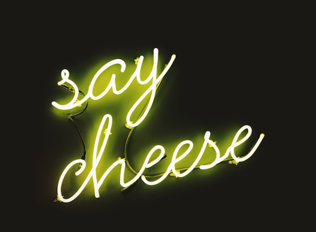

Images und alle anderen Elemente können wir mit Borders, also Rahmen stylen.
Es gibt verschiedene Arten, optionen und looks.
dotted = gepunkteter Rahmen
dashed = gestrichelter Rahmen
solid = durchgehender Rahmen
double = doppelter Rahmen
groove = eingekratzter Rahmen / 3D Rahmen
ridge = nach oben spitzer 3D Rahmen
inset = Eingelassener 3D Rahmen
outset = Aufgesetzter 3D Rahmen
Wenn wir die Seite angeben, auf der wir stylen wollen, können wir dieser eine Option unserer Wahl zuweisen.
Wir können auch mehrere Arten an einem Element nutzen
mit border-width können wir spezifische Größen angeben. Der Standardwert ist 3px.
Wir können auch Shorthand benutzen, um text zu sparen
Mit Border-Radius können wir Elemente am Rand abrunden.
Die Ecken werden top / bottom - left / right benannt